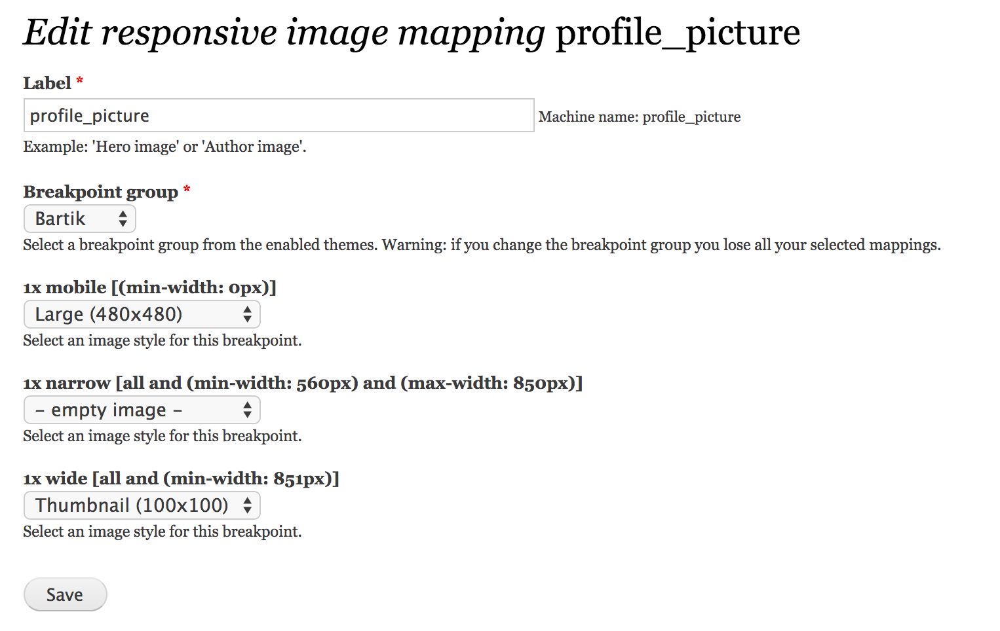

...
Drupal 8 Theming
12.9.2014 Lauri Eskola
What's new?
HTML5
HTML5
Dries FTW!
So Drupal 8 WONT support
ie 6
ie 7
ie 8
Drupal CSS
Drupal 7
<body class="html drupal7 is-awesome wtf">
Drupal 8
<body>
CSS build on SMACSS
More from #1887918
CSS
.field {
margin: 6px 9px;
}
.field .field--name {
color: pink;
}
HTML
<div class="field field--name" />
Drupal 8 File structure
No more
sites/all/whatever/bullshit/themes

Twig
Basics in under 5 minutes
Comments & Vars
PHP:
<?php
// My test variable
print $variable;
Twig:
{# My test variable #}
{{ variable }}
Set variables
{% set variable = 'result' %}
{%
set array = [
'foo',
'bar',
]
%}
Arrays
PHP:
<?php
// WTF?!
print $foo['im']['und']->boss['long']['ass']['mofo'] ?>
Twig:
{{ foo.im.boss.long.ass.mofo }}
Loops
Team Awesome
{% for user in users %}
- {{ user.username}}
{% endfor %}
Team Awesome
- cottser
- joel
- jen
- mark carver
- mortendk
Loop stuff
{{ loop.length }}
{{ loop.first }}
{{ loop.last }}
{{ loop.index }}
{% if loop.first %}
...
{% elseif loop.index == 2 %}
...
{% elseif loop.last %}
...
{% endif %}
Filter
{% filter upper %}
uppercase for the win
{% endfilter %}
|Filter
{% set name = 'Lauri' %}
{{ name|length }}
Returns:
5
Moar?
Twig documentation: http://twig.sensiolabs.org/
You no like it?
Solution!
# engine: phptemplate
themename.info
Drupal specific Twig functionalities
Filters
{% set class_name = 'lauri/druid' %}
{%
set contributors = [
'rteijeiro',
'joelpittet',
'Cottser',
'lauriii',
'Dries',
]
%}
{{ class_name|clean_class }}
{{ contributors|without('lauriii') }},
Returns
lauri-druid
rteijeiro,joelpittet,Cottser,Dries,
Add/Remove class
More information #2325067
<div{{ attributes.addClass('field-item-' ~ name|clean_class) }}>
OR
<div{{ attributes.removeClass('GTFO', 'i-hate--you') }}>
HTML Attributes
Not ready yet, more info #2325517
Preprocess:
<?php
function template_preprocess_username(&$variables) {
$variables['attributes'] = new Attribute;
}
?>
Template:
<div{{ attributes.addAttribute('I-Love', 'Dries') }}>
Translate
{{ 'Author: @username'| t({'@username':username}) }}
Or:
{% trans %}
Author {{ username }}
{% endtrans %}
New theme: Classy
Idea behind:
- Create core base theme - why not?
- Move all class logic to classy - so no classes from core - awesome!
- Still under constraction - we need you! #2289511
Breakpoint and Responsive Image
Usage
Example (bartik.breakpoints.yml)
bartik.mobile:
label: mobile
mediaQuery: '(min-width: 0px)'
weight: 0
bartik.narrow:
label: narrow
mediaQuery: 'all and (min-width: 560px) and (max-width: 850px)'
weight: 1
bartik.wide:
label: wide
mediaQuery: 'all and (min-width: 851px)'
weight: 2
Responsive Image configuration
Will result: